サイン - GIFアニメ
- Photoshopのレイヤーをタイムラインのフレームに変換
完成例
制作手順
1. Illustratorで消す過程をレイヤーで作成
- Illustratorで完成から「消しゴム」でサインの後半から消す
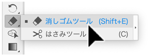
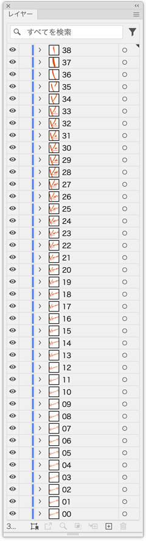
2. Photoshop形式で書き出し
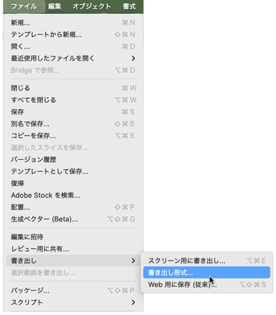
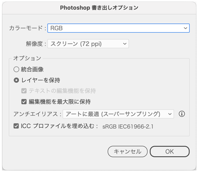
3. Photoshopで開く
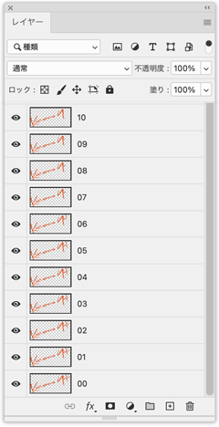
4. タイムラインウィンドウを開く
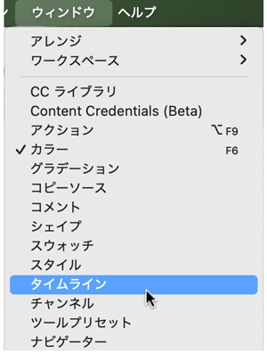
5. 「フレームアニメーションを作成」を押す
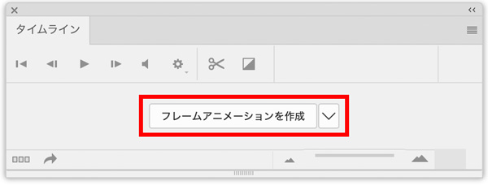
6. オプション→「レイヤーからフレームを作成」を選択
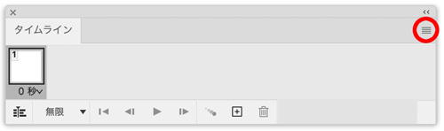
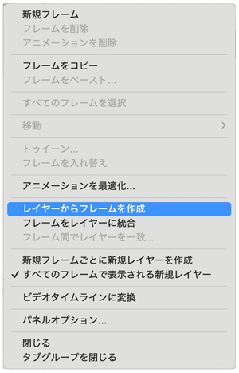
7. 「フレームを入れ替え」を選択
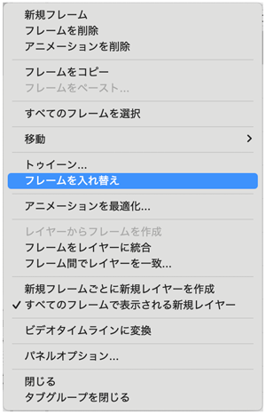
8. タイムの設定
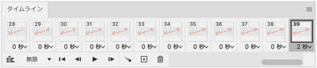
9. GIF形式で保存
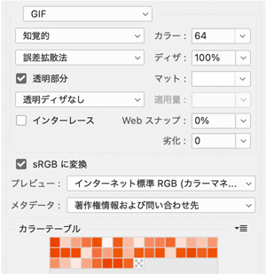